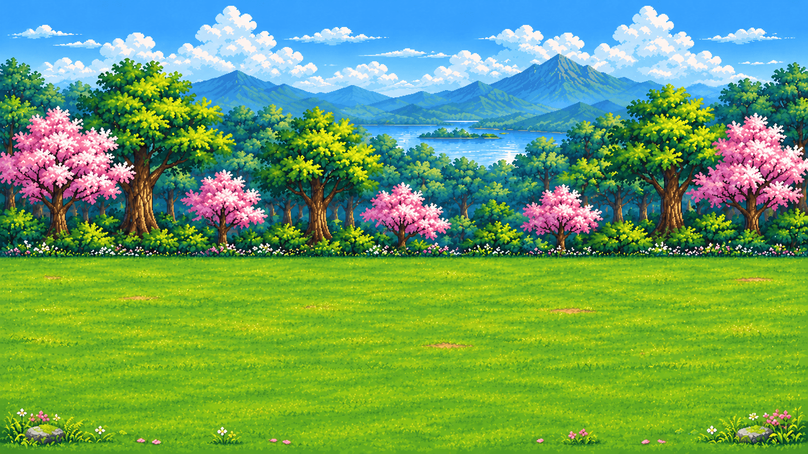
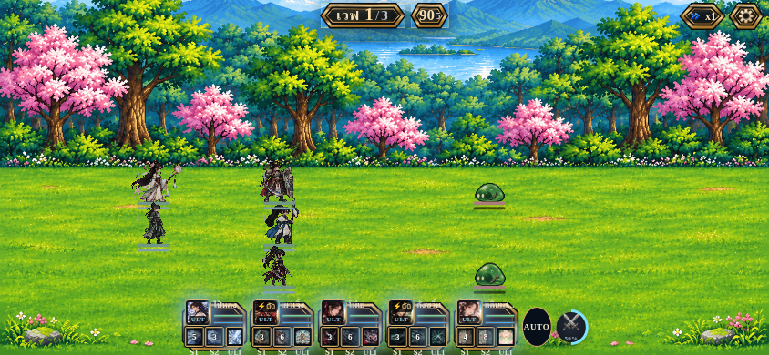
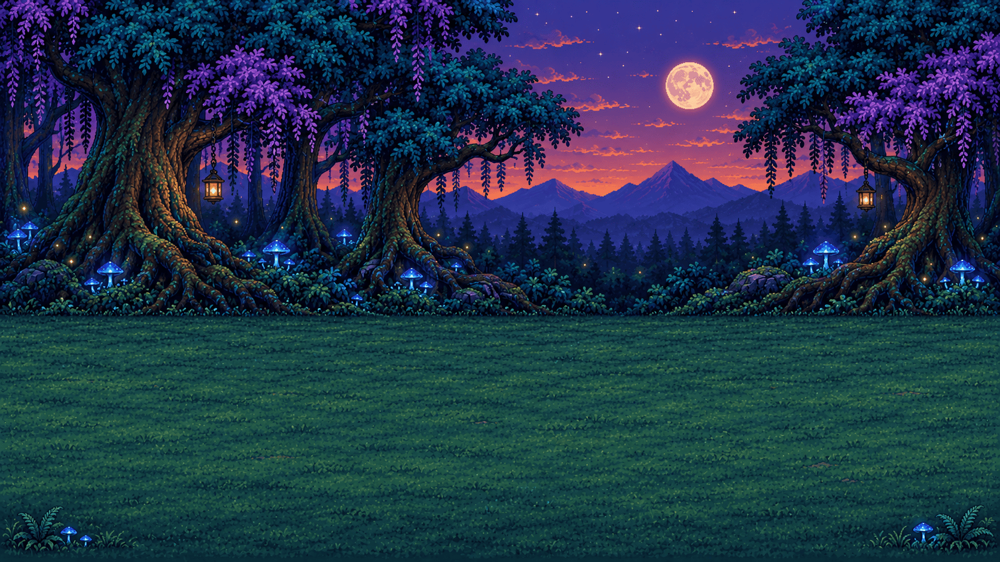
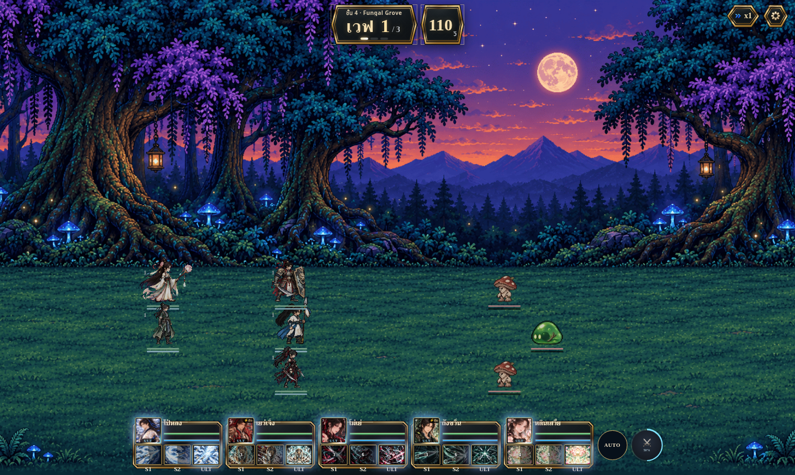
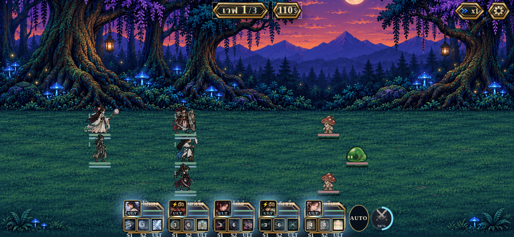
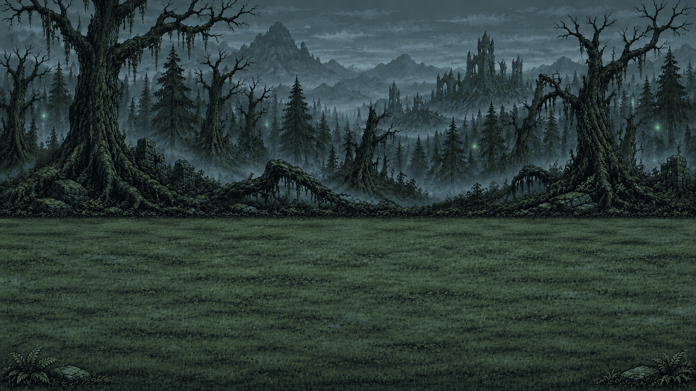
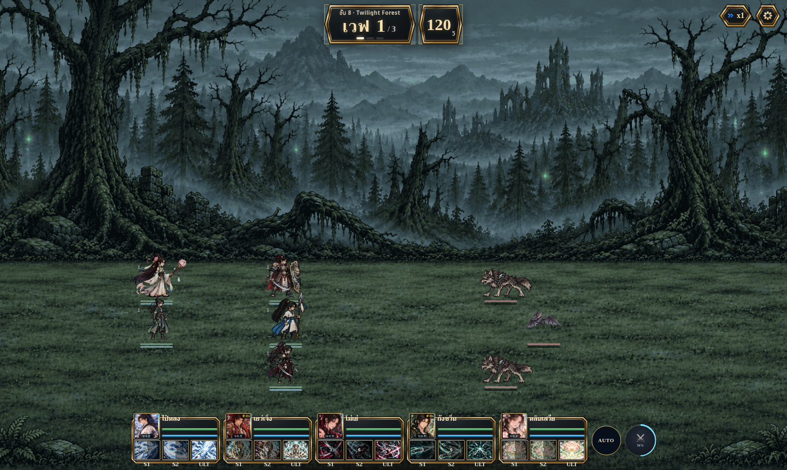
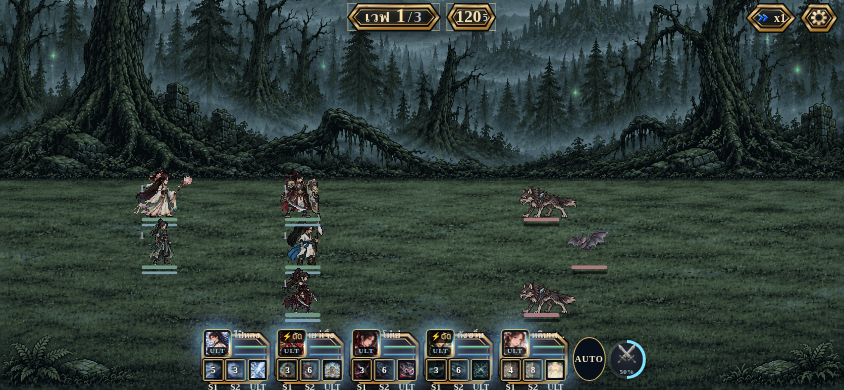

forest-1 · 1440×860



Real Chromium captures, 1440×860 and 844×390. Source images are unmodified; the runtime uses lossless WebP. Cover crops the outer edges to fit each viewport. Board cells remain square; the 16-column board is centered within the clearing.







